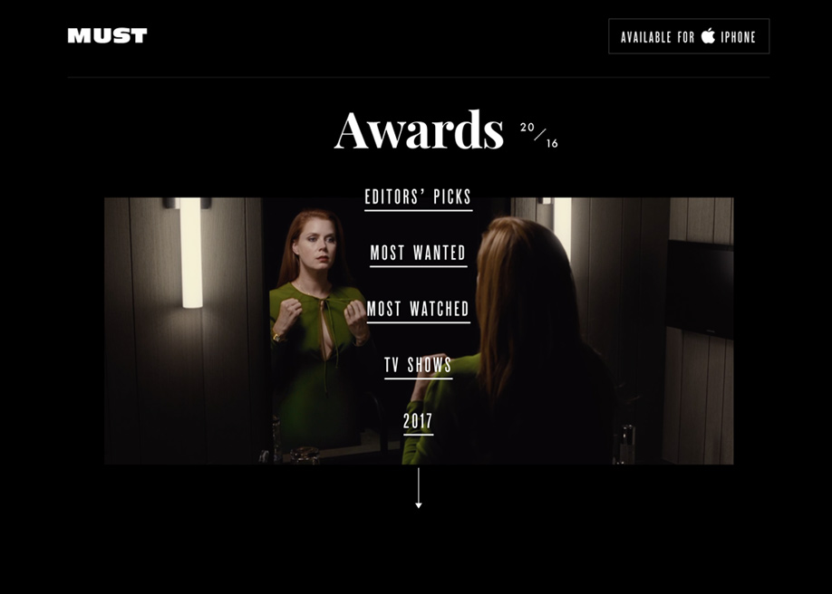
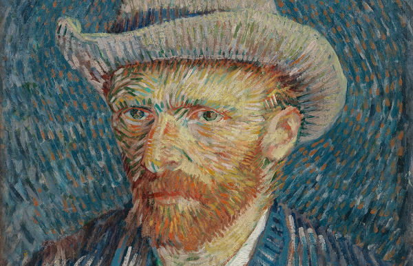

Design & Authoring for Interactive Media
My Favorite Internet

Must Awards
Must awards is a site that gives updates and critiques about the latest movies. What I love about this site is how modern it looks with incredible high quality pictures. It has many different fonts but they look like they belong together, what also got my attention is how when scrolling down the slides are smoothly. Overall I love how simple and at the same time professional it looks.

Vangogh Museum
I picked The Vangogh Museum site because while I was doing research on Art History I came across this one besides being a fan of his work the website looked stunning to me. The site has a modern design style and the colors give it a classic style.